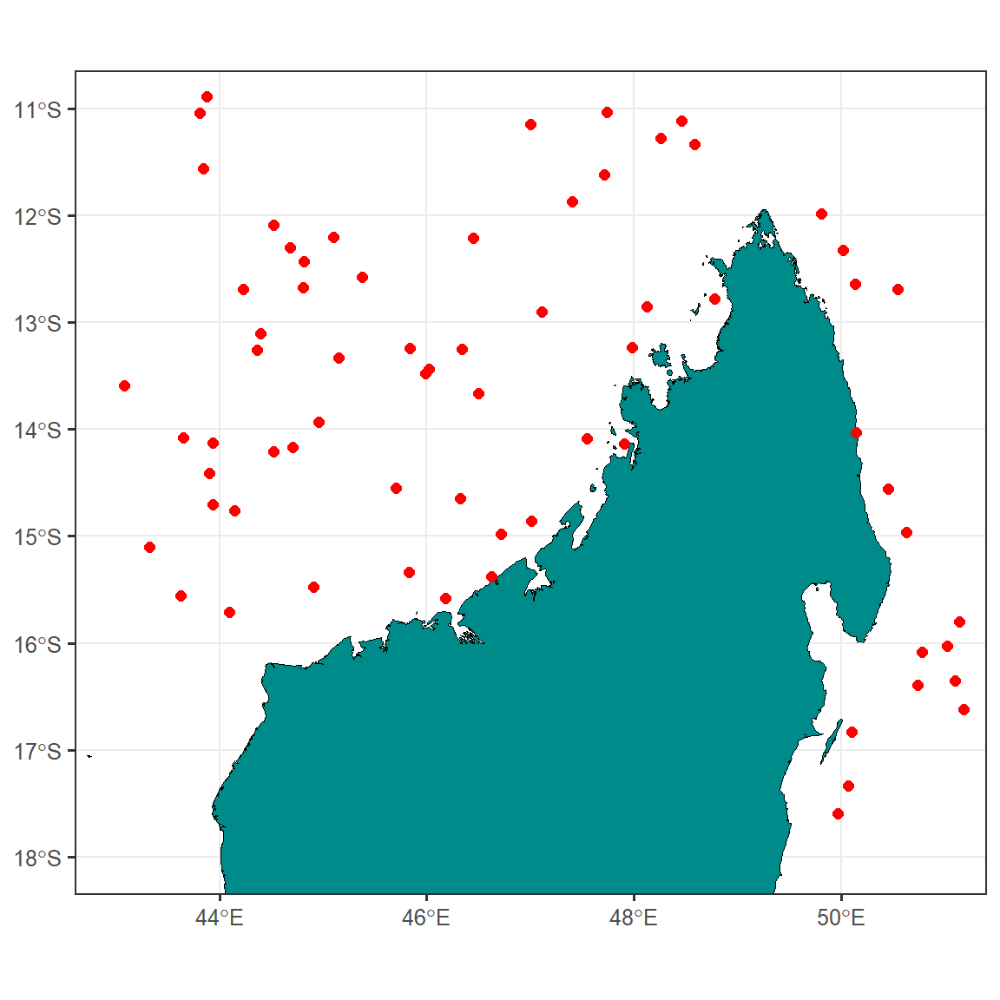
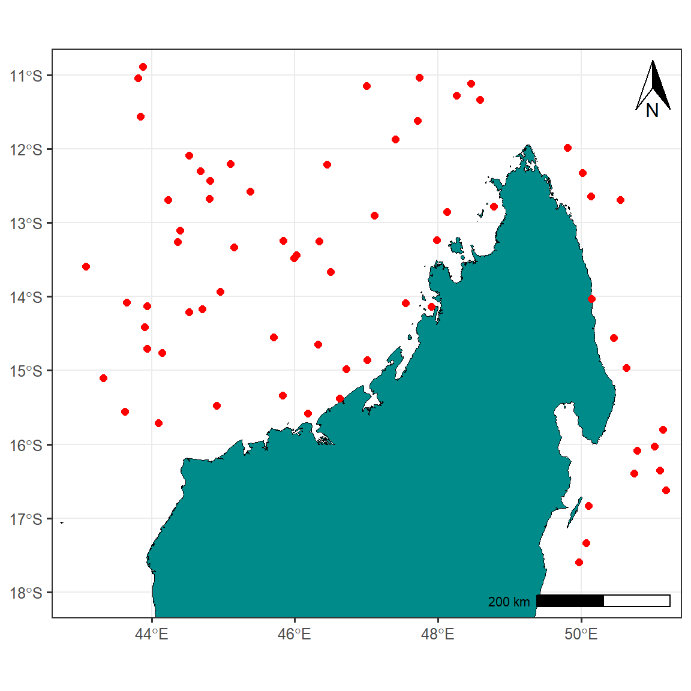
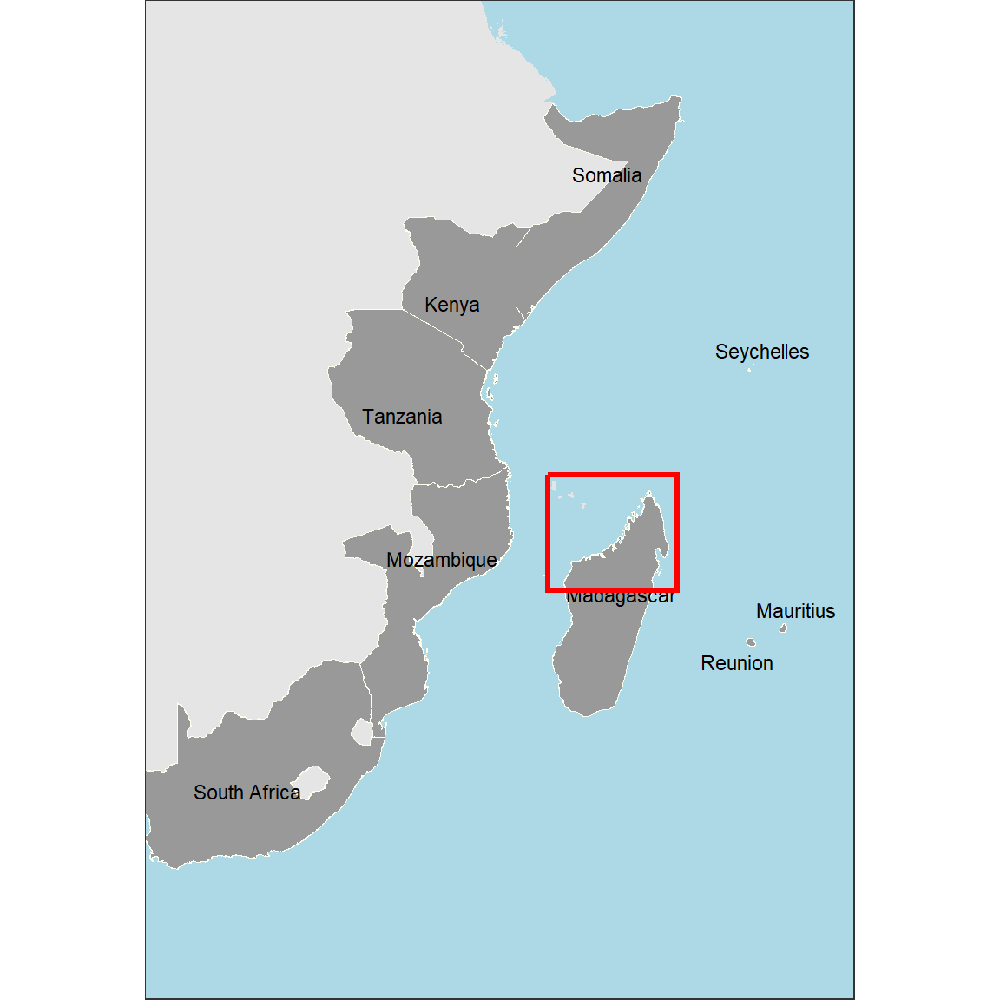
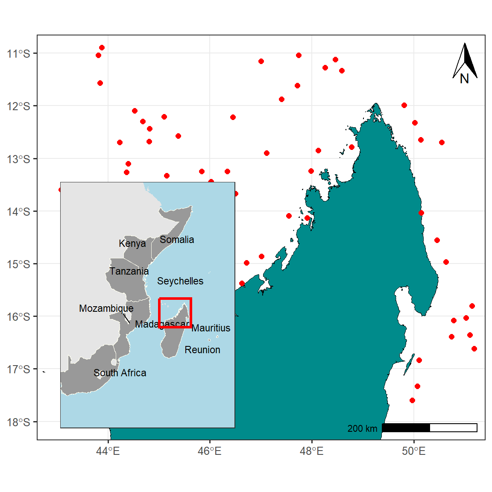

![]()
library(tidyverse)
library(sf)Main and Inset maps with R
Analysis
Visualization
Introduction
In this post, We learn how we can make publication quality inset maps in R using ggplot2 package (Wickham 2016). When publishing scientific research in journals or presenting research work at a conference, showing maps of data collection sites or experimental locations is one of the key visualization elements. Maps of study sites or sampling locations can help the audience and readers to fathom the data in a better way. Mapping sounds fancy, but it needs substantial training and skill set to make high-quality maps that are reader-friendly and visually aesthetic.
Sometimes, the study sites are more dispersed and are easy to visualize in large geographic areas. However, in some cases, study sites are clustered, which makes it hard to show them on a broader scale. In that case, inset maps help us show the locations with reference to familiar geographical regions. An inset map is a smaller map featured on the same page as the main map. Traditionally, inset maps are shown at a larger scale (smaller area) than the main map. Often, an inset map is used as a locator map that shows the area of the main map in a broader, more familiar geographical frame of reference.
Spatial Vector Data Storage
If you have been using the vector data and doing spatial analysis, you know shapefile. Shapefile is the most commonly used vector data formats to store data and carry out any spatial analysis.
Characteristics of a shapefile
Shapefiles are vector data storage models for storing feature classes composed of points, lines and polygons, but never a mixture. It stores information of the location, shape and attributes of geographical features. Each item in a shapefile has attributes that describe it composed of rows, called records and columns called fields and can also store multipart features, in which a single feature includes multiple objects which includes
- .shp file stores coordinate data
- .dbf file stores attribute data
- .shx file stores a spatial index that speeds drawing and analysis
- .prj file stores projection information
- .avl file stores legend
- .xml file contains metadata
Characteristics of a shapefile
- Takes up more storage space on your system
- Shapefiles have a minimum size of 2GB
- Do not support names in fields longer than 10 characters
- A shapefile cannot have more than one geometry type in a file.
- Cannot store data and time in the same field
- Do not support raster files
- Do not store NULL values in a field; when a value is NULL, a shapefile will use 0 instead.
But, shapefile has a lot of disadvantages when you wish to scale your work and build integrated & automated workflows for large-scale deployments. Geopackage format offers a variety of features in this regard. And that’s why you need to use Geopackage files instead of shapefile. Let’s dive deeper into the details.
Geopackage
A Geopackage is platform-independent format for storing and transferring geospatial information. It is a SQLite based standard format designed for stand-alone databases that holds both raster data and multiple vector data layers in a single file and can be accessible by non-GIS software.
Characteristics of a Geopackage
- Geopackages are open source, SQLite based database
- No limitation on the file size and can handle large number of features
- Can store both raster as well as vector data layers
- A single Geopackage file can have multiple vector layers with each layer having a different geometry type.
Why choose Geopackages and not Shapefiles?
Shapefile is a multi-file format with minimum of 3 files and several other attached files with different extensions. Sharing a shapefile with someone would be complicated as all the other files attached will also have to be shared. Whereas, Geopackages includes all the information of the layer in a file and is easier to transfer or share.
Compared to shapefiles, the column headers in a geopackage can be full names and right by providing the correct context for each column. A shapefile can only have 10 characters to define the column header.
Geopackages run faster on algorithm outputs compared to shapefiles.
In a geopackage, there is no limit on the file size and can handle large number of features in a smaller file size. A shapefile can handle maximum size of 2 GB and cannot export a vector layer with more features.
A Geopackage stores both raster and vector files whereas, shapefiles can store only vector files.
Geopackages are lightweight and compatible across environments specially in mobile devices. It is 1.1-1.3x lighter in file size compared to shapefiles.
Load libraries
Several packages in R are dealing with spatial data, but in this post we are going to use funtions from tidyverse (Wickham and Wickham 2017) and sf (Pebesma 2018) packages. We can load these packages with a library function as as;
Load file
We first need to import spatial data into the session. For this case we are going to load the boundary layer of Africa. The file has boundary for 67 polygons representing feature in Africa. We can load the file into the session using st_read function from sf package (Pebesma 2018).
africa = st_read("../data/africa.gpkg", quiet = TRUE)Next I’ll extract the polygon for WIO region countries from from the Africa package using the filter function.
wio = africa |>
filter(
country %in% c("Tanzania", "Kenya", "Mozambique", "South Africa",
"Somalia", "Madagascar", "Seychelles", "Reunion", "Mauritius"))
wio.point.country = wio %>% wior::polygon_tb() %>% distinct(country, .keep_all = TRUE)Then we load study points that were sampled off the coast of Madagascar.
sampling.points = st_read("../data/madagascar_points.gpkg", quiet = TRUE) %>%
filter(state == "Ocean")
madagascar = wio %>% filter(country == "Madagascar")Focus Map
Now, I’ll plot a focused map of Madagascar. We need to define the geographical extent of the area. For that purpose, we first need to identify the extent of the study sites and we can do that using extent function from **sf package;
madagascar %>% st_bbox() xmin ymin xmax ymax
42.71862 -25.60895 50.48378 -11.94543 The printed results indicates tha maxima and minima of longitude and latitude, which define the geographical extent of the area. Using the min and max values of coordinates from the previous map, we can draw a polygon over the study sites and see if this extent can best visualize the data.
map.site = ggplot() +
ggspatial::layer_spatial(data = madagascar, fill = "cyan4", color = "black",size = .4)+
geom_sf(data = sampling.points, color = "red", size = 2)+
ggsci::scale_color_lancet()+
theme_bw(base_size = 12)+
theme(axis.title = element_blank())+
coord_sf(xlim = c(43, 51), ylim = c(-18,-11))
map.site
As you can see, the study sites are located on the northern part of Madagascar Island. However, to make a better sense of the study locations with reference to WIO region, we need to plot them on a focused scale.
Add Map elements
Professional maps also include some elements like North Arrow and scale etc. We’ll add these components to our map as well. Besides that, I’ll also fill the non-land area with lightblue color for reference and distinction respectively Figure 1.
map.site = map.site +
guides(size = "none") +
ggspatial::annotation_north_arrow(location = "tr",
height = unit(1.2, "cm"),
width = unit(.75, "cm"))+
ggspatial::annotation_scale(location = "br")
map.site
Inset Map
Now, I’ll create a full-scale map of WIO region with a red polygon showing the extent of study sites and the focused map. The code below produce Figure 2;
inset.map = ggplot() +
ggspatial::layer_spatial(data = africa, fill = "grey90", color = "grey90") +
ggspatial::layer_spatial(data = wio, fill = "grey60", color = "ivory",size = .4)+
# geom_sf_text(data = wio, aes(label = country))+
ggrepel::geom_text_repel(data = wio.point.country,
aes(x = lon, y = lat, label = country), size = 3)+
theme_bw(base_size = 12)+
theme(axis.title = element_blank())+
geom_rect(aes(xmin = 43, xmax = 51, ymin = -18, ymax = -11),
color = "red", fill = NA, size = 1.2)+
coord_sf(xlim = c(20, 60), ylim = c(-40,15))+
theme_test() +
theme(axis.text = element_blank(),
axis.ticks = element_blank(),
axis.ticks.length = unit(0, "pt"),
axis.title=element_blank(),
plot.margin = margin(0, 0, 0, 0, "cm"),
panel.background = element_rect(fill = "lightblue"))
inset.map
This version looks better compared to the previous one. However, we need to add some information to give it a reference.
Final Map
Now, to combine both maps where the map of WIO region is inset on the upper left corner we use the function from cowplot package. a draw_plot function allow to places a plot somewhere onto the drawing canvas that is established using ggdraw function also from cowplot package (Wilke 2018). By default, coordinates run from 0 to 1, and the point (0, 0) is in the lower left corner of the canvas. The function also allows us to specify the size of the inset map using the width and height functions.
cowplot::ggdraw(plot = map.site) +
cowplot::draw_plot(inset.map, x = .1, y = .13, width = .4, height = .5)
Summary
Therefore , a final map shown in Figure 3 shows the locations of study sites with reference to the country and provinces and is more professional.
Last updated
[1] "16 February 2023"Cited Materials
Pebesma, Edzer. 2018. “Simple Features for R: Standardized Support for Spatial Vector Data.” The R Journal 10 (1): 439–46. https://doi.org/10.32614/RJ-2018-009.
Wickham, Hadley. 2016. Ggplot2: Elegant Graphics for Data Analysis. Springer-Verlag New York. https://ggplot2.tidyverse.org.
Wickham, Hadley, and Maintainer Hadley Wickham. 2017. Tidyverse: Easily Install and Load the ’Tidyverse’. https://CRAN.R-project.org/package=tidyverse.
Wilke, Claus O. 2018. Cowplot: Streamlined Plot Theme and Plot Annotations for ’Ggplot2’. https://CRAN.R-project.org/package=cowplot.